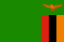

MALAWI (WOMEN'S)
MALAWI SCORCHERS
Coach · Lovemore Fazili
All Results
| MALAWI | RESULT | OPPONENT |
|---|---|---|
Malawi | 2:1 |  Ghana Ghana |
Temwa Chawinga 12'Rose Kadzere 79' Chantelle Boye-Hlorkah 7' | ||
Line-upStarting XI Goalkeepers
Defenders
Midfielders
Forwards
Substitutions
Unused substitutes Olivia Phikani (2), Deborah Henry (3), Tionge Phiri (5), Maggie Chavula (14), Yamikani Kawonga (16), Chisomo Banda (19), Sarah Mulimbika (20), Esther Maulidi (23), Lyna James (25), Vitumbiko Mkandawire (26) | ||
| Malawi | 1:2 |  Zambia |
Tabitha Chawinga 72' Barbra Banda 2'Prisca Chilufya 37' | ||
Line-upStarting XI Goalkeepers
Defenders
Midfielders
Forwards
Substitutions
Unused substitutes Olivia Phikani (2), Deborah Henry (3), Tionge Phiri (5), Vanessa Chikupila (13), Maggie Chavula (14), Yamikani Kawonga (16), Chisomo Banda (19), Sarah Mulimbika (20), Esther Maulidi (23), Chikondi Gondwe (24), Lyna James (25) | ||
| Malawi | 3:1 |  Egypt Egypt |
Rose Kadzere 35'Faith Chinzimu 45+2'Temwa Chawinga 68' Camilla Abouseif 71' | ||
Line-upStarting XI Goalkeepers
Defenders
Midfielders
Forwards
Substitutions
Unused substitutes Olivia Phikani (2), Deborah Henry (3), Tionge Phiri (5), Vanessa Chikupila (13), Maggie Chavula (14), Yamikani Kawonga (16), Chisomo Banda (19), Sarah Mulimbika (20), Esther Maulidi (23), Chikondi Gondwe (24), Lyna James (25), Vitumbiko Mkandawire (26) | ||
| Malawi | 3:2 |  Nigeria Nigeria |
Temwa Chawinga 73'Tabitha Chawinga 79'Temwa Chawinga 90+5' Rasheedat Ajibade 90+2' (P)Uchenna Kanu 90+9' | ||
Line-upStarting XI Goalkeepers
Defenders
Midfielders
Forwards
Substitutions
Unused substitutes Olivia Phikani (2), Deborah Henry (3), Tionge Phiri (5), Tendai Sani (8), Maggie Chavula (14), Yamikani Kawonga (16), Chisomo Banda (19), Sarah Mulimbika (20), Esther Maulidi (23), Chikondi Gondwe (24), Lyna James (25), Vitumbiko Mkandawire (26) | ||
| Malawi | 1:2 |  Morocco Morocco |
| Malawi | 0:0 | Tanzania |
| Malawi | 0:1 | Tanzania |
Anastazia Katunzi 48' | ||
| Malawi | 2:3 | India |
Ireen Khumalo 43'Deborah Henry 60' Astam Oraon 19'Aveka Singh 45+1'Priyadharshini Selladurai 84' | ||
| Malawi | 0:5 |  Australia Australia |
Emily van Egmond 5'Sam Kerr 41'Alex Chidiac 60'Holly McNamara 86'Leticia McKenna 90+4' | ||
| Malawi | 1:0 |  Angola Angola |
Ireen Khumalo 77' | ||
| Malawi | 8:1 |  Lesotho Lesotho |
Ireen Khumalo 4'Deborah Henry 10'Deborah Henry 11'Vanessa Chikupira 39'Ireen Khumalo 44'Deborah Henry 45+2'Vitumbiko Mkandawire 50'Olivia Phikani 57' Makhotso Moalosi 71' | ||
| Malawi | 0:2 |  South Africa South Africa |
Sibulele Holweni 63'Bonolo Mokoma 90+1' | ||
| Malawi | 1:1 | Zambia |
Rose Kadzere 56' Natasha Nanyangwe 65' | ||
| Malawi | 1:2 |  Zimbabwe Zimbabwe |
Faith Chinzimu 40' Ethel Chinyerere 3'Ethel Chinyerere 37' | ||
| Malawi | 2:0 | Angola |
Faith Chinzimu 82'Faith Chinzimu 84' | ||
| Malawi | 0:0 | Angola |
| Malawi | 3:0 | Lesotho |
Asimenye Simwaka 45+4'Asimenye Simwaka 71'Asimenye Simwaka 75' | ||
| Malawi | 3:0 | Lesotho |
Asimenye Simwaka 7'Asimenye Simwaka 34'Sabinah Thom 77' | ||
| Malawi | 1:3 | Ghana |
Tendai Sani 15' Doris Boaduwaa 23' (P)Doris Boaduwaa 32'Doris Boaduwaa 81' | ||
| Malawi | 2:4 | Morocco |
Tabitha Chawinga 27' (P)Rose Kadzere 35' Bernadette Mkandawire 40' (OG)Sakina Ouzraoui 42'Ibtissam Jraïdi 56'Kenza Chapelle 90+2' | ||